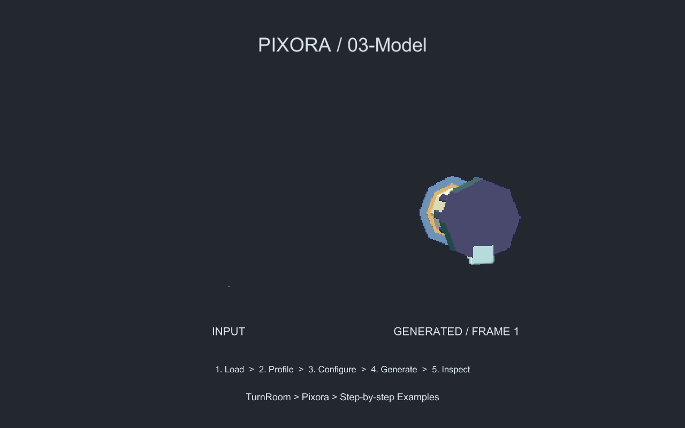

Tracefolio REPORTS & ISSUES
Tracefolio REPORTS & ISSUES신규 Blender 예제의 FBX 축·단위 초기화 수정
해결신규 예제 검증 중 발견한 모델 방향·입력 표시 문제를 내부 Geometry와 identity 배치 루트 분리로 수정했습니다.
작업 결과
템플릿 스타일과 무관한 신규 FBX 예제 조립 오류 수정. 실제 씬·픽셀·네이티브 단계 QA 완료.
변경 내용
재현 조건
Unity 6000.0.83f1 / Blender 5.2.3 LTS / 신규 Pixora 샘플
재현 순서
새 Blender FBX를 prefab으로 만든 뒤 ModelCapture와 예제 씬의 배치 회전을 적용한다.
기대 동작
모델의 축·단위와 전체 부위 프레임을 유지한 상태로 정면을 촬영하고 입력도 표시한다.
실제 동작
초기 실제 카메라 렌더에서 전망대가 위에서 본 모습이 되고 입력 모델이 제대로 표시되지 않았다.
원인
FBX 최상위 Transform에 들어 있던 -90도 축 변환과100배 단위 변환이 촬영 복제/씬 배치의 최상위 초기화에 의해 소실됨. prefab Transform과 실제 렌더로 대조.
적용 내용
TutorialArtwork에서 identity 외부 루트 아래 Geometry에 FBX 변환을 보존하고 앞 방향을 정규화했습니다. ModelCapture와 기존 판매 제품 기능은 수정하지 않았습니다.
검증
최종 Unity396개 검사 통과. 모델별 상하 기준점·미터 단위·128×128 셀·모든 Full 프레임의 가장자리 여유를 확인했습니다. 실제 Play 모드50번 단계 클릭도 통과했습니다.


남은 사항
신규 제작 예제의 내부 검증 중 발견한 오류입니다. 외부 고객 환경의 모든 FBX 형식을 검증했다는 의미는 아닙니다. 교훈 검토: 전역 실제 화면 검증 규칙과 중복되어 전역 변경 없음. FBX 변환 보존 기준은 프로젝트 소스와 보고서에 기록했습니다.
작업 시간
- 제안 시간: 40
70분. 후속 요청으로 공용 폰트·샘플 UI와 두 제품 표시 검증 추가(1020분 분량). - 실제로 완료된 시간: 기록 시작 2026-10-31 15:48:59 KST. 구현·실행 QA·푸시 및 보고서 초안 작성 2026-10-31 16:53:36 대한민국 표준시; 기록 기준 64.6분. 공개 게시 확인 진행 중.
- XERJ: 사용 — TutorialAssets, UITemplateStyles 검색 후 현재 소스로 대조. 샘플 자산·씬·문서와 누락 범위는 rg 및 실제 Unity 실행으로 확인.